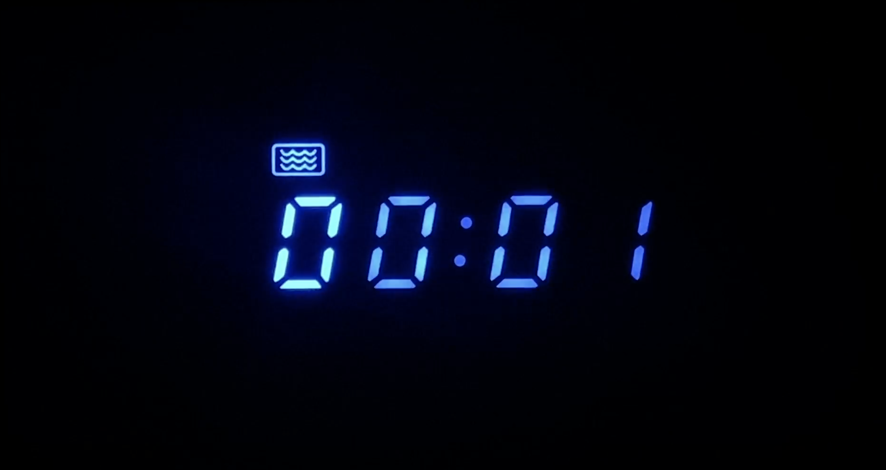

What’s a project from your foundation year that you are particularly proud or fond of?
 I’m particularly fond of a video I made for my TIME class last year. The goal of the project was to create an abstract video that remained consistent through elements of time, color, or A project I am particularly fond of from my foundation year is a video I made for my time class. The goal was to create an abstract video from various clips that were connected in some way (length, color, sound, etc.) I felt proud of the video because I was able to edit using Premiere, which is a program I struggled with before this project, and film aesthetically pleasing footage with what I had available around my house.
I’m particularly fond of a video I made for my TIME class last year. The goal of the project was to create an abstract video that remained consistent through elements of time, color, or A project I am particularly fond of from my foundation year is a video I made for my time class. The goal was to create an abstract video from various clips that were connected in some way (length, color, sound, etc.) I felt proud of the video because I was able to edit using Premiere, which is a program I struggled with before this project, and film aesthetically pleasing footage with what I had available around my house.

Question #8